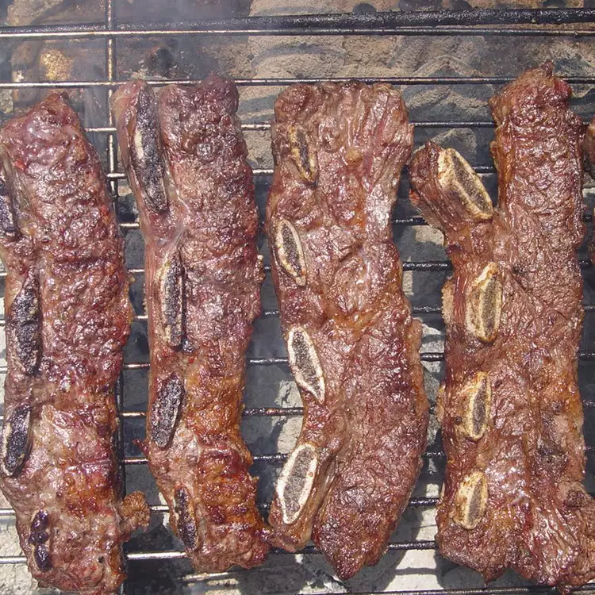

Argentinian-Style Ribs

Description
These Argentinian-style short ribs are heavily coated with salt to bring
out the fat. At first glance, you'll say "Whoa, that's way too salty!" But
give them a try! This quick and easy recipe is one of the best I've ever
tried.
Ingredients
- 6 pounds beef short ribs
- 1 cup coarse salt, or as needed
- 6 medium limes, cut in wedges
Steps
-
Preheat an outdoor grill for medium-high heat and lightly oil the grate.
- Coat ribs heavily with salt.
-
Cook on the preheated grill until meat pulls away easily from the bone,
5 to 7 minutes per side. An instant-read thermometer inserted into the
center should read 130 degrees F (54 degrees C).
-
Transfer ribs to a large glass serving dish and squeeze lime wedges over
top. Serve immediately.
Return to main page